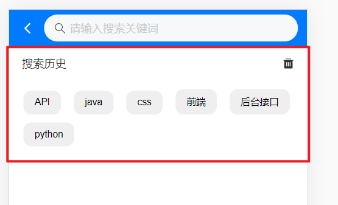
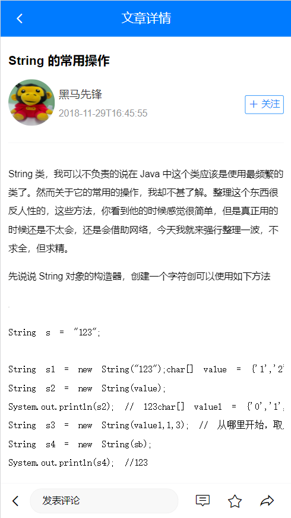
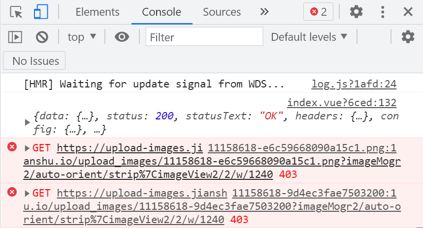
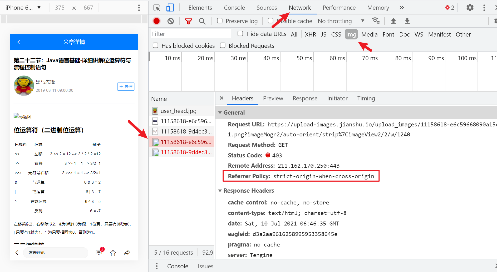

Day04_文章搜索和详情
# 1.文章搜索_页面和路由
# 目标
准备文章搜索页面和路由

# 步骤
views/Search/index.vue - 新建页面和标签
<template> <div> <!-- 搜索页面头部 --> <div class="search-header"> <!-- 后退按钮 --> <van-icon name="arrow-left" color="white" size="0.48rem" class="goback" @click="$router.back()"/> <!-- 搜索组件 --> <van-search placeholder="请输入搜索关键词" background="#007BFF" shape="round" /> </div> </div> </template> <script> export default { data () { return { kw: '' // 搜索关键字 } } } </script> <style scoped lang="less"> .search-header { height: 46px; display: flex; align-items: center; background-color: #007bff; overflow: hidden; /*后退按钮*/ .goback { padding-left: 14px; } /*搜索组件*/ .van-search { flex: 1; } } </style>配置路由 - 与layout并列关系
import Search from '@/views/Search' const routes = [ // ... { path: '/search', component: Search } ] const router = new VueRouter({ routes }) export default router点击Home页面右上角搜索图标, 可以切换路由到搜索页面
<template #right> <van-icon name="search" size="0.48rem" color="#fff" @click="$router.push('/search')"/> </template>
# 小结
- 分析页面结构, 创建搜索页面和路由地址
# 2.文章搜索_自动聚焦指令
# 目标
输入框自动聚焦效果
封装全局自定义指令
Vue.use插件方式注入

# 自定义指令-封装
utils/directives.js, 定义全局自定义指令插件
import Vue from 'vue' // 插件对象(必须有install方法, 才可以注入到Vue.use中) export default { install () { Vue.directive('fofo', { inserted (el) { // 指令在van-search组件身上, 获取的是组件根标签div, 而input在标签内 el = el.querySelector('input') el.focus() } }) } }引入到main.js注册
import diretivesObj from '@/utils/directives' Vue.use(diretivesObj)Vue.use相关文档: https://cn.vuejs.org/v2/api/#Vue-use
去van-search上使用
<!-- 搜索组件 --> <van-search v-fofo placeholder="请输入搜索关键词" background="#007BFF" shape="round" />
# 小结
- 自定义指令的inserted何时执行?
- 当指令所在组件, 第一次插入到真实DOM被调用
# 3.文章搜索_输入框防抖
# 目标
用户只想要最后一次结果
减少无用的触发逻辑代码执行

# 步骤
van-search关联kw变量
<van-search v-fofo v-model="kw" placeholder="请输入搜索关键词" background="#007BFF" shape="round" />在data中声明变量timer, 保存延迟定时器
data () { return { kw: '', // 搜索关键字 timer: null // 防抖, 用的定时器 } }监听输入框的@inupt事件, 在事件处理函数中使用防抖操作
<van-search v-fofo v-model="kw" placeholder="请输入搜索关键词" background="#007BFF" shape="round" @input="inputFn"/> <script> methods: { inputFn () { clearTimeout(this.timer) this.timer = setTimeout(() => { if (this.kw.length === 0) return // 防止空内容触发下面逻辑 console.log(this.kw) }, 500) } } </script>
# 小结
- 什么是防抖?
- 降低逻辑代码触发频率
- 只要最后一次执行即可
- 如果中间再次触发, 重新弄个计时器倒计时
# 4.文章搜索_搜索建议列表
# 目标
准备标签和样式
寻找接口定义api方法
搜索文字出现, 铺设联想菜单

# 步骤
准备标签
<!-- 搜索建议列表 --> <div class="sugg-list"> <div class="sugg-item" > 搜索建议 </div> </div>美化样式
/*搜索建议列表样式 */ .sugg-list { .sugg-item { padding: 0 15px; border-bottom: 1px solid #f8f8f8; font-size: 14px; line-height: 50px; // 实现省略号的三行代码 white-space: nowrap; overflow: hidden; text-overflow: ellipsis; } }定义接口方法
// 搜索 - 联想菜单 export const suggestListAPI = ({ q }) => { return request({ url: '/v1_0/suggestion', params: { q: q } }) }在Search/index.vue使用, 把数据保存到data里的变量中
import { suggestListAPI } from '@/api' export default { data () { return { kw: '', // 搜索关键字 timer: null, // 防抖, 用的定时器 suggestList: [] // 建议关键字列表 } }, methods: { async inputFn () { clearTimeout(this.timer) this.timer = setTimeout(async () => { if (this.kw.length === 0) return // 防止空内容触发下面逻辑 const res = await suggestListAPI({ q: this.kw }) this.suggestList = res.data.data.options }, 500) } } }渲染循环到页面上
<!-- 搜索建议列表 --> <div class="sugg-list"> <div class="sugg-item" v-for="(str, index) in suggestList" :key="index" v-html="lightFn(str, kw)"></div> </div>
# 小结
- 什么是联想菜单?
- 当你输入关键字, 提示你要搜索的关键词
# 5.文章搜索_关键字高亮
# 目标
联想菜单推荐的词语关键字高亮

# 步骤
定义高亮方法utils/str.js - 封装
/** * 转换高亮文字的方法 * @param {*} str 要被处理的字符串 * @param {*} target 要匹配关键字 * @returns 处理后带标签高亮的方法 */ export const lightFn = (str, target) => { const reg = new RegExp(target, 'ig') return str.replace(reg, (match) => { // match是关键字匹配的值(尽量保持原样) return `<span style="color: red">${match}</span>` }) }导入到vue组件页面, 注册, 使用
<template> <div> <!-- 搜索页面头部 --> <!-- 搜索建议列表 --> <div class="sugg-list" v-for="(str, index) in suggestList" :key="index"> <div class="sugg-item" v-html="lightFn(str, kw)"></div> </div> </div> </template> <script> import { lightFn } from '@/utils/str' export default { methods: { lightFn // key和value变量名同名 } } </script>
# 小结
关键字高亮如何做?
用replace方法+正则+文字替换span带样式的标签
# 6.文章搜索_历史铺设
# 目标
- 搜索历史铺设

# 步骤
定义初始变量
history: ['API', 'java', 'css', '前端', '后台接口', 'python'] // 搜索历史准备标签DOM结构
<!-- 搜索历史 --> <div class="search-history"> <!-- 标题 --> <van-cell title="搜索历史"> <!-- 使用 right-icon 插槽来自定义右侧图标 --> <template #right-icon> <van-icon name="delete" class="search-icon" /> </template> </van-cell> <!-- 历史列表 --> <div class="history-list"> <span class="history-item">历史文字</span> </div> </div>美化样式
/**搜索历史 */ .search-icon { font-size: 16px; line-height: inherit; } .history-list { padding: 0 10px; .history-item { display: inline-block; font-size: 12px; padding: 8px 14px; background-color: #efefef; margin: 10px 8px 0px 8px; border-radius: 10px; } }循环铺设
<!-- 历史列表 --> <div class="history-list"> <span class="history-item" v-for="str, index in history" :key="index">{{ str }} </span> </div>互斥条件, 搜索列表
<!-- 搜索建议列表 --> <div class="sugg-list" v-if="kw.length !== 0"> </div> <!-- 搜索历史 --> <div class="search-history" v-else> </div>
# 小结
- 如果暂无后台接口数据, 怎么办?
- 先写一个固定数据, 循环出标签和样式
- 以后有接口数据再替换
# 7.文章搜索_结果页
# 目标
输入框回车后, 跳转到搜索结果页
点击联想菜单项后, 跳转到搜索结果页
点击历史记录, 跳转到搜索结果页

# 步骤
定义搜索结果页面Search/SearchResult.vue - 并且配置路由
<template> <div> <!-- 搜索结果页-头部导航 --> <div class="search-result-container"> <!-- 点击实现后退效果 --> <van-nav-bar title="搜索结果" left-arrow @click-left="$router.go(-1)" fixed /> </div> </div> </template> <script> export default { name: 'SearchResult' } </script> <style lang="less" scoped> .search-result-container { padding-top: 46px; } </style>返回箭头颜色到cover.css里定制成白色即可
@nav-bar-icon-color: white;路由配置
import SearchResult from '@/views/Search/SearchResult' { path: '/search/:keywords', component: SearchResult }Search/index.vue - 回车跳转传参
<van-search v-fofo v-model="kw" placeholder="请输入搜索关键词" background="#007BFF" shape="round" @input="inputFn" @search="enterFn" /> <script> methods: { // 输入框回车 enterFn () { this.$router.push({ path: `/search/${this.kw}` }) } } </script>Search/index.vue - 联想菜单项, 点击跳转传参
<div class="sugg-list" v-if="kw.length !== 0"> <div class="sugg-item" v-for="(str, index) in suggestList" :key="index" v-html="lightFn(str, kw)" @click="clickFn(str)" ></div> </div> <script> methods: { // 建议列表点击 clickFn (str) { this.$router.push({ path: `/search/${str}` }) } } </script>点击历史记录, 跳转结果页
<!-- 历史列表 --> <div class="history-list"> <span class="history-item" v-for="(str, index) in history" :key="index" @click="hisClickFn(str)" >{{ str }}</span> </div> <script> methods: { // 历史记录点击 hisClickFn (str) { this.$router.push({ path: `/search/${str}` }) } } </script>
# 小结
- 搜索结果是路由面面, 重新配置页面
- 跳转传参在路径上传递(动态路由)
# 8.文章搜索_历史存储和清空(上午结束)
# 目标
输入框按回车, 保存搜索词值
点联想菜单的项, 保存菜单项值

# 步骤
在输入框回车确认事件中, 录入搜索关键字
this.history.push(this.kw) // 保存搜索关键字在点击联想菜单项, 录入搜索关键字
this.history.push(str) // 保存搜索关键字问题1: 发现回来history数组里并未渲染历史列表
因为跳转页面, 原来页面被释放了, 回来后数组重新创建
解决: 本地缓存起来
watch: { history () { localStorage.setItem('his', JSON.stringify(this.history)) } }刚打开默认从本地获取history数组的值
history: JSON.parse(localStorage.getItem('his')) || [] // 搜索历史问题2: 但是发现跳转后, 并未保存到本地(==原因: 先跳转了, watch还未来的及执行==)
给路由跳转加个定时器(最后执行)
// 输入框回车 enterFn () { this.history.push(this.kw) // 保存搜索关键字 setTimeout(() => { this.$router.push({ path: `/search/${this.kw}` }) }) }, // 建议列表点击 clickFn (str) { this.history.push(str) // 保存搜索关键字 setTimeout(() => { this.$router.push({ path: `/search/${str}` }) }) }但是发现有重复的关键字, 需要数组去重技术 - 可以用Set集合类型
在回车和点击事件push方法下写, 不要写到watch里, 否则造成递归
this.history = Array.from(new Set(this.history)) // 去重点击删除小图标, 清空搜索历史
<!-- 标题 --> <van-cell title="搜索历史"> <!-- 使用 right-icon 插槽来自定义右侧图标 --> <template #right-icon> <van-icon name="delete" class="search-icon" @click="clearFn"/> </template> </van-cell> <script> methods: { // 清空搜索历史 clearFn () { this.history = [] // watch会触发, 把空数组保存到本地 } } </script>
# 小结
- 监测输入框的搜索事件, 添加到history数组里
- 监测联想菜单的点击事件, 添加到history数组里
- watch监测history变化, 存储到本地
- history默认初始值, 从本地提取出来
# 9.文章搜索_结果列表铺设
# 目标
把搜索结果数据准备好
结果列表铺设

# 步骤
定义搜索结果列表接口
// 搜索 - 结果列表 export const searchResultListAPI = ({ q, page = 1 }) => { return request({ url: '/v1_0/search', params: { q, page } }) }在Search/SearchResult.vue中 接收路由参数, 然后 调用接口拿到搜索结果列表数据
import { searchResultListAPI } from '@/api' export default { name: 'SearchResult', async created () { const res = await searchResultListAPI({ q: this.$route.params.keywords // 拿到关键词, keywords来源于router/index.js你定义的动态路由参数名 }) console.log(res) } }Search/SearchResult.vue - 标签准备 - 复用components/ArticleItem.vue
可以考虑, 把Home/components/ArticleItem 挪到全局公共组件src/components文件夹下
<!-- 搜索结果 --> <div> <article-item></article-item> </div> <script> import ArticleItem from '@/components/ArticleItem' export default { components: { ArticleItem } } </script>SearchResult.vue - 接收数据, 循环文章单元格, 传入文章对象 - 查看效果
<template> <div> <!-- 搜索结果页-头部导航 --> <!-- 搜索结果 --> <div> <article-item v-for="obj in articleList" :key="obj.art_id" :obj="obj"></article-item> </div> </div> </template> <script> import { timeAgo } from '@/utils/date' export default { data () { return { articleList: [] // 文章数据 } }, async created () { const res = await searchResultListAPI({ q: this.$route.params.keywords // 拿到关键词, keywords来源于router/index.js你定义的动态路由参数名 }) console.log(res) // 数据预处理 res.data.data.results.forEach(obj => { obj.pubdate = timeAgo(obj.pubdate) }) this.articleList = res.data.data.results } } </script>
# 小结
- 根据关键字调用接口, 拿到搜索结果
- 复用之前文章组件(ArticleItem)即可
# 10.文章搜索_上拉加载更多
# 目标
集成触底加载更多数据功能

# 步骤
准备van-list组件和变量以及方法, 单独定义个getSearchResultFn方法
<template> <div> <!-- 搜索结果页-头部导航 --> <!-- 搜索结果 --> <div> <van-list v-model="loading" :finished="finished" finished-text="没有更多了" @load="onLoad" :immediate-check="false" offset="50" > <article-item v-for="obj in articleList" :key="obj.art_id" :obj="obj" ></article-item> </van-list> </div> </div> </template> <script> export default { data () { return { articleList: [], // 文章数据 loading: false, // 加载状态 finished: false // 全部加载完成状态 } }, methods: { // 触底加载更多 onLoad () { }, // 获取搜索结果 async getSearchResultFn () { const res = await searchResultListAPI({ q: this.$route.params.keywords // 拿到关键词, keywords来源于router/index.js你定义的动态路由参数名 }) console.log(res) // 数据预处理 res.data.data.results.forEach((obj) => { obj.pubdate = timeAgo(obj.pubdate) }) this.articleList = res.data.data.results } }, created () { this.getSearchResultFn() } } </script>在onLoad触发的网络请求函数中
- 接口已经准备好, page传参
- data变量里定义page: 1
- onLoad方法中判断现在有数据, page++, 发请求
export default { data () { return { articleList: [], // 文章数据 loading: false, // 加载状态 finished: false, // 全部加载完成状态 page: 1 // 页码 } }, methods: { // 触底加载更多 onLoad () { if (this.articleList.length > 0) { this.page++ this.getSearchResultFn() } }, // 获取搜索结果 async getSearchResultFn () { const res = await searchResultListAPI({ q: this.$route.params.keywords, // 拿到关键词, keywords来源于router/index.js你定义的动态路由参数名 page: this.page }) console.log(res) // 更多数据判断 if (res.data.data.results.length === 0) { this.finished = true return } // 数据预处理 res.data.data.results.forEach((obj) => { obj.pubdate = timeAgo(obj.pubdate) }) // 合并数据 this.articleList = [...this.articleList, ...res.data.data.results] this.loading = false } } }
# 小结
- van-list组件使用
- 把官网那句话截图, 按照流程来做即可
# 11.详情_页面创建
# 目标
文章详情页创建和路由

# 步骤
创建页面views/ArticleDetail/index.vue
<template> <div> <!-- Header 区域 --> <van-nav-bar fixed title="文章详情" left-arrow @click-left="$router.back()" /> <!-- 文章信息区域 --> <div class="article-container"> <!-- 文章标题 --> <h1 class="art-title">小程序</h1> <!-- 用户信息 --> <van-cell center title="张三" label="3天前"> <template #icon> <img src="" alt="" class="avatar"> </template> <template #default> <div> <van-button type="info" size="mini">已关注</van-button> <van-button icon="plus" type="info" size="mini" plain>关注</van-button> </div> </template> </van-cell> <!-- 分割线 --> <van-divider></van-divider> <!-- 文章内容 --> <div class="art-content">好好学习, 天天向上</div> <!-- 分割线 --> <van-divider>End</van-divider> <!-- 点赞 --> <div class="like-box"> <van-button icon="good-job" type="danger" size="small">已点赞</van-button> <van-button icon="good-job-o" type="danger" plain size="small">点赞</van-button> </div> </div> </div> </template> <script> export default { } </script> <style scoped lang="less"> .article-container { padding: 10px; margin-top: 46px; } .art-title { font-size: 16px; font-weight: bold; margin: 10px 0; } .art-content { font-size: 12px; line-height: 24px; width: 100%; overflow-x: scroll; word-break: break-all; /deep/ img{ width: 100%; } /deep/ pre { white-space: pre-wrap; word-wrap: break-word; } } .van-cell { padding: 5px 0; &::after { display: none; } } .avatar { width: 60px; height: 60px; border-radius: 50%; background-color: #f8f8f8; margin-right: 5px; border: none; } .like-box { display: flex; justify-content: center; } </style>注册分割线组件, 在main.js
import { Divider } from 'vant' Vue.use(Divider)在路由里配置好
import ArticleDetail from '@/views/ArticleDetail' const routes = [ // ... { path: '/article_detail', component: ArticleDetail } ]
# 12.详情_跳转和x区分
# 目标
- 首页点击文章, 跳转详情
- 搜索结果点击, 跳转详情
- x号首页有, 搜索结果没有
# 步骤
在SearchResult.vue里的文章单元格article-item组件上点击跳转
==注意, ArticleItem是组件, 包括Vant的都是组件, 组件身上的事件都是自定义事件(别看是叫click)==
组件内需要$emit('click')才会执行
解决: 给组件绑定原生的点击事件@click.native (使用修饰符)
<article-item v-for="obj in articleList" :key="obj.art_id" :obj="obj" @click.native="$router.push(`/article_detail?aid=${obj.art_id}`)" ></article-item>在Home/ArticleList.vue的ArticleItem也点击跳转, 同样方式传参
<!-- 文章列表 --> <article-item v-for="item in articleList" :key="item.art_id" :obj="item" @dislike="dislikeFn" @reports="reportsFn" @click.native="$router.push(`/article_detail?aid=${item.art_id}`)" ></article-item>首页x, 点击也跳转详情了, 原因: 事件冒泡, 解决
在src/components/ArticleItem, 阻止x的事件冒泡
<!-- 反馈按钮 --> <van-icon name="cross" @click.stop="onCloseClick" />搜索结果页, 文档单元格不应该有x
所以给ArticleItem传入布尔值, 使用组件时, 控制是否显示
components/ArticleItem.vue
<!-- 反馈按钮 --> <van-icon name="cross" @click.stop="onCloseClick" v-if="showX"/> <script> props: { showX: { type: Boolean, default: true // 默认显示 } } </script>默认显示, 那在Search/SearchResult.vue, 传入false即可
<article-item v-for="obj in articleList" :key="obj.art_id" :obj="obj" @click.native="$router.push(`/article_detail?aid=${obj.art_id}`)" :showX="false" ></article-item>
# 小结
需要区分时, 可以让使用者传入一个值控制
事件冒泡, 触发事件的标签会逐级向父级传递这个事件
传递过程中, 有人实现了这个事件处理函数, 则执行
# 13.详情_数据渲染
# 目标
- 文章详情数据渲染
# 步骤
在api/index.js - 定义接口
// 文章 - 详情 export const articleDetailAPI = ({ id }) => { return request({ // :id是后台规定的参数名 // 前端要在对应路径位置传值(不要写:) url: `/v1_0/articles/${id}` }) }ArticleDetail.vue中 - 调用接口拿到文章详情数据, 并保存到data变量上
import { articleDetailAPI } from '@/api' export default { async created () { const res = await articleDetailAPI(this.$route.params.art_id) console.log(res) } }把数据铺设到页面上
<template> <div> <!-- Header 区域 --> <van-nav-bar fixed title="文章详情" left-arrow @click-left="$router.back()" /> <!-- 文章信息区域 --> <div class="article-container"> <!-- 文章标题 --> <h1 class="art-title">{{ artObj.title }}</h1> <!-- 用户信息 --> <van-cell center :title="artObj.aut_name" :label="artObj.pubdate"> <template #icon> <img :src="artObj.aut_photo" alt="" class="avatar" /> </template> <template #default> <div> <van-button type="info" size="mini" v-if="artObj.is_followed" >已关注</van-button > <van-button icon="plus" type="info" size="mini" plain v-else >关注</van-button > </div> </template> </van-cell> <!-- 分割线 --> <van-divider></van-divider> <!-- 文章内容 --> <div class="art-content" v-html="artObj.content"></div> <!-- 分割线 --> <van-divider>End</van-divider> <!-- 点赞 --> <div class="like-box"> <van-button icon="good-job" type="danger" size="small" v-if="artObj.attribute === 1" >已点赞</van-button > <van-button v-else icon="good-job-o" type="danger" plain size="small" >点赞</van-button > </div> </div> </div> </template> <script> import { articleDetailAPI } from '@/api' export default { data () { return { artObj: {} // 文章对象 } }, async created () { const res = await articleDetailAPI({ id: this.$route.query.aid }) console.log(res) this.artObj = res.data.data } } </script>
# 小结
- 详情页的文章id, 从路由的query参数里拿到
# 14.详情_作者-关注和取关
# 目标
作者的关注
作者的取关

# 步骤
先实现前端效果, 先别考虑接口
- 给2个按钮绑定相同方法, 传入布尔值区分
- 修改对象属性, 影响页面显示按钮
<van-button type="info" size="mini" v-if="artObj.is_followed" @click="followedFn(false)" >已关注</van-button> <van-button icon="plus" type="info" size="mini" plain v-else @click="followedFn(true)" >关注</van-button> <script> // 作者关注/取关 async followedFn (bool) { if (bool === true) { // 用户点了关注按钮 // 业务: 关注用户 // 显示: 已关注按钮 this.artObj.is_followed = true } else { // 用户点了已关注按钮身上 // 业务: 取消关注用户 // 显示: 关注按钮 this.artObj.is_followed = false } } </script>定义接口方法
// 文章 - 关注作者 export const followedUserAPI = ({ target }) => { return request({ url: '/v1_0/user/followings', method: 'POST', data: { target: target } }) } // 文章 - 取消关注作者 export const unFollowedUserAPI = ({ uid }) => { return request({ // 这uid只是个变量名, 把值拼接在url发给后台(无需指定参数名) url: `/v1_0/user/followings/${uid}`, method: 'DELETE' }) }在follwedFn方法, 调用接口
import { followedUserAPI, unFollowedUserAPI } from '@/api' // 作者关注/取关 async followedFn (bool) { if (bool === true) { // 用户点了关注按钮 // 业务: 关注用户 // 显示: 已关注按钮 this.artObj.is_followed = true await followedUserAPI({ target: this.artObj.aut_id }) } else { // 用户点了已关注按钮身上 // 业务: 取消关注用户 // 显示: 关注按钮 this.artObj.is_followed = false await unFollowedUserAPI({ uid: this.artObj.aut_id }) } }
# 小结
- 属性值控制哪个按钮显示
- 点击要的业务, 对应业务接口
# 15.详情_文章-点赞和取赞
# 目标
实现文章点赞
实现文章取消点赞功能

# 步骤
还是先实现前端效果, 不考虑接口
<!-- 点赞 --> <div class="like-box"> <van-button icon="good-job" type="danger" size="small" v-if="artObj.attitude === 1" @click="loveFn(false)" >已点赞</van-button> <van-button v-else @click="loveFn(true)" icon="good-job-o" type="danger" plain size="small" >点赞</van-button> </div> <script> // 文章点赞/取消点赞 async loveFn (bool) { if (bool === true) { // 用户点在了点赞按钮上 // 业务 => 点赞文章 // 显示 => 已点赞按钮 this.artObj.attitude = 1 } else { // 用户点在了已点赞按钮上 // 业务 => 取消点赞文章 // 显示 => 点赞按钮 this.artObj.attitude = -1 } } </script>接口定义
// 文章 - 点赞 export const articleLikeAPI = ({ target }) => { return request({ url: '/v1_0/article/likings', method: 'POST', data: { target: target } }) } // 文章 - 取消点赞 export const articleDisLikeAPI = ({ artId }) => { return request({ url: `/v1_0/article/likings/${artId}`, method: 'DELETE' }) }在业务判断里, 调用接口更新给后台状态
import { articleLikeAPI, articleDisLikeAPI } from '@/api' // 文章点赞/取消点赞 async loveFn (bool) { if (bool === true) { // 用户点在了点赞按钮上 // 业务 => 点赞文章 // 显示 => 已点赞按钮 this.artObj.attitude = 1 await articleLikeAPI({ target: this.$route.query.aid }) } else { // 用户点在了已点赞按钮上 // 业务 => 取消点赞文章 // 显示 => 点赞按钮 this.artObj.attitude = -1 await articleDisLikeAPI({ artId: this.$route.query.aid }) } }
# 小结
- 先实现页面交互效果
- 再根据逻辑分别调用后台接口
# 16.详情_图片防盗链
# 目的
- 了解什么是图片防盗链
- 如何解决图片403问题
# 分析
有时候报错403状态码, 发现都是图片路径请求问题

# 原因
http请求头中有一个referrer字段，用来表示发起http请求的源地址信息

服务器端在拿到这个referrer值后判断请求是否来自本站
- 若不是则返回403，从而实现图片的防盗链。上面出现403就是因为，请求的是别人服务器上的资源，但把自己的referrer信息带过去了，被对方服务器拦截返回了403
# 解决
在前端可以通过meta来设置referrer policy(来源策略)，referrer设置成no-referrer，发送请求不会带上referrer信息，对方服务器也就无法拦截了
<!-- 解决图片403防盗链问题 -->
<meta name="referrer" content="no-referrer" />
但是如果他们做了其他判断, 我们依旧拿不到此图片
# 小结
- 图片为何会403?
- 在自己的网页里, img的src地址是别人服务器的, 他们做了限制
- 如何解决图片403?
- 在index.html中, 添加meta信息, 不携带referrer给第三方服务器
- 但是如果他们做了其他判断, 我们依旧拿不到此图片